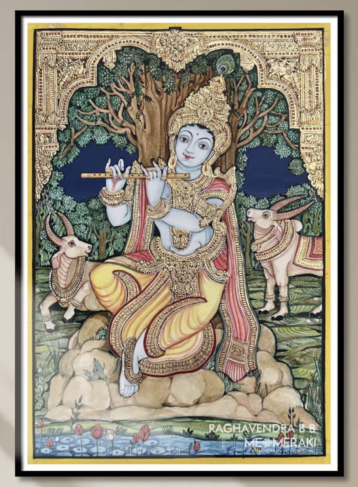

Mysore paintings feel like devotion captured in gold. The figures—gods, goddesses, and divine scenes—are calm, graceful, and filled with quiet power. There is no chaos, no excess movement—only balance, purity, and spiritual beauty. The romance here is deeply divine and serene. It’s not about human love, but about bhakti (devotion). The soft expressions, delicate postures, and glowing gold backgrounds create a sense of peace, as if the painting itself is a form of prayer.
Mysore painting developed under the patronage of the Wodeyar dynasty of Mysore. • Flourished between the 17th and 19th centuries • Strongly influenced by Vijayanagara art traditions • Created mainly for temples and royal courts Artists focused on depicting: • Hindu deities like Krishna, Lakshmi, Saraswati • Mythological scenes from epics These paintings were meant not just for decoration, but for worship and spiritual connection.
Mysore painting is known for its precision, softness, and gold work: • Gesso Work (Relief Work) A paste is applied to create raised areas, especially for jewelry and ornaments • Gold Leaf Application Real gold foil is used, giving a rich and glowing effect • Fine Brushwork Extremely delicate lines for facial features and details • Muted Background Colors Keeps focus on the central figure • Balanced Composition Usually centered around a main deity, creating symmetry and calmness
Mysore paintings were created by trained court artists and temple painters. • Worked under royal patronage of the Mysore kingdom • Skills passed through guilds and family traditions • Required deep knowledge of religion, symbolism, and technique Even today, artists continue this tradition, preserving its classical purity.